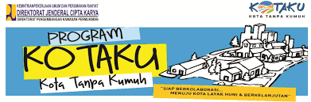

Program Kota Tanpa Kumuh (Kotaku) adalah satu dari sejumlah upaya strategis Direktorat Jenderal Cipta Karya Kementerian Pekerjaan Umum dan Perumahan Rakyat untuk mempercepat penanganan permukiman kumuh di Indonesia dan mendukung “Gerakan 100-0-100”, yaitu 100 persen akses universal air minum, 0 persen permukiman kumuh, dan 100 persen akses sanitasi layak. Arah kebijakan pembangunan Dirjen Cipta Karya adalah membangun sistem, memfasilitasi pemerintah daerah, dan memfasilitasi komunitas (berbasis komunitas). Program Kotaku akan menangani kumuh dengan membangun platform kolaborasi melalui peningkatan peran pemerintah daerah dan partisipasi masyarakat.